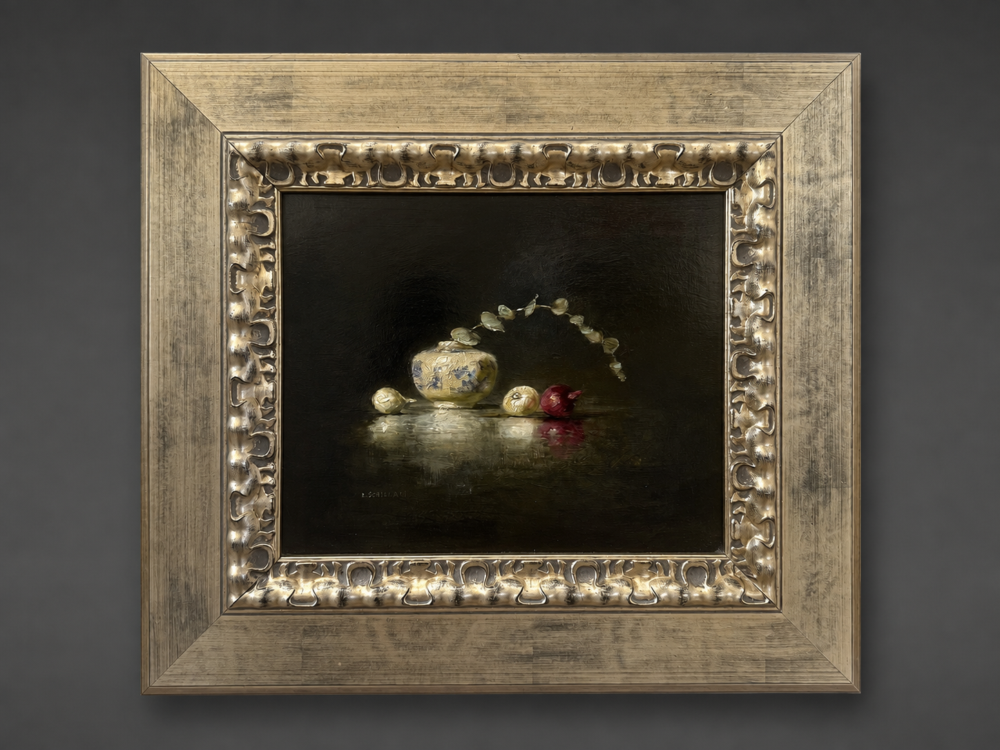

AMBLESIDE ARTIST
Lindy Schillaci
Painting · Still Life
FEATURED WORK

Eucalyptus in a China Vase
Lindy Schillaci
THE ARTIST
Color,
texture and
everyday beauty.
Texas-based painter Lindy Bailey Schillaci is known for intimate still-life paintings that transform familiar fruits, vegetables and everyday objects through close observation, vibrant color and richly rendered texture.
Schillaci's relationship with art began early. Growing up along the Texas Gulf Coast, she began taking private art lessons while still in junior high school.
She went on to earn a Bachelor of Fine Arts in painting and ceramics from Southwest Texas State University in San Marcos before moving to New York City in the mid-1980s.
In New York, Schillaci studied fashion illustration at Parsons School of Design and the Fashion Institute while working in an Upper East Side gallery and taking calligraphy commissions.
She returned to Texas in 1991 and renewed her focus on painting, studying in workshops with artists including David Leffel, Albert Handell and Sherrie McGraw.
THE WORK
The familiar becomes extraordinary through color, texture and light.
SUBJECT & PROCESS
Looking
closely at
ordinary things.
Schillaci's still-life subjects are often drawn directly from the world around her — from objects in her kitchen to fruits and vegetables grown close to home.
Pears from her own tree and peppers grown by her stepson have become subjects for paintings, giving the work an intimacy rooted in daily life rather than elaborate staging.
She is particularly drawn to variations in surface, color and the changing effects of light. Smooth skins, irregular forms and saturated hues become opportunities for sustained observation.
Although still life remains central to her practice, Schillaci has also worked with landscape and plein-air painting, bringing the same attention to light and direct observation into the natural world.
SELECTED WORKS
The Collection
Mangoes
Oranges and Grapes
Turquoise Bowl
Two Pears
EDUCATION
Training & Development
BFA
Bachelor of Fine Arts in Painting and Ceramics, Southwest Texas State University, San Marcos, Texas.
NEW YORK
Fashion illustration studies at Parsons School of Design and the Fashion Institute.
DAVID LEFFEL
Continued painting study with an emphasis on still life.
ALBERT HANDELL
Continued study in painting and observational practice.
SHERRIE McGRAW
Continued study in still-life and representational painting.
COLLECT